Dokumentasi Upacara Suci Umat Hindu Bali
Identitas Mahasiswa
| NIM | 202408013 |
| Program Studi | Fotografi |
| Lokasi Dokumentasi | Ketewel, Bali |
Tentang Upacara
Melasti merupakan rangkaian upacara suci umat Hindu di Bali yang dilakukan menjelang Hari Raya Nyepi sebagai proses penyucian dan penyeimbangan alam. Melasti dilakukan di laut atau sumber mata air suci untuk membersihkan diri dan alam dari hal-hal negatif.
✦ ✦ ✦Setelah itu, dilanjutkan dengan Tawur Kesanga yang dilaksanakan saat Tilem Kesanga, berupa persembahan untuk menetralisir energi buruk (bhuta kala) dan memulihkan keseimbangan antara manusia, alam, dan kekuatan spiritual.
Prosesi Upacara
Prosesi Melasti di Ketewel diawali dengan seluruh sesuhunan dari pura-pura yang ada di Desa Ketewel lunga (datang) menuju Pura Samuan Tiga yang berlokasi di Pura Payogan Agung. Setelah prosesi ini, masyarakat mulai melakukan maturan atau mempersembahkan sesajen kepada masing-masing sesuhunan. Rangkaian ini dilaksanakan sehari sebelum hari pengerupukan, sekitar pukul 07.00 WITA.
✦ ✦ ✦Keesokan harinya, tepat pada hari pengerupukan sekitar pukul 13.00 WITA, dilaksanakan prosesi Melasti menuju Pantai Pabean Ketewel. Seluruh sesuhunan kembali lunga menuju pantai untuk disucikan. Terdapat beberapa rangkaian upacara seperti ngaturan banten, Tari Rejang Dewa, Tari Baris, serta Tari Topeng Sidakarya.
✦ ✦ ✦Setelah seluruh rangkaian di pantai selesai, sesuhunan kemudian menuju Bale Pegat di Pura Desa Ketewel, di mana dilaksanakan upacara mecaru sebagai bagian dari penyucian dan penyeimbangan. Setelah prosesi mecaru selesai, seluruh sesuhunan budal (kembali) ke masing-masing pura.
Suasana Prosesi Melasti · Ketewel, Bali
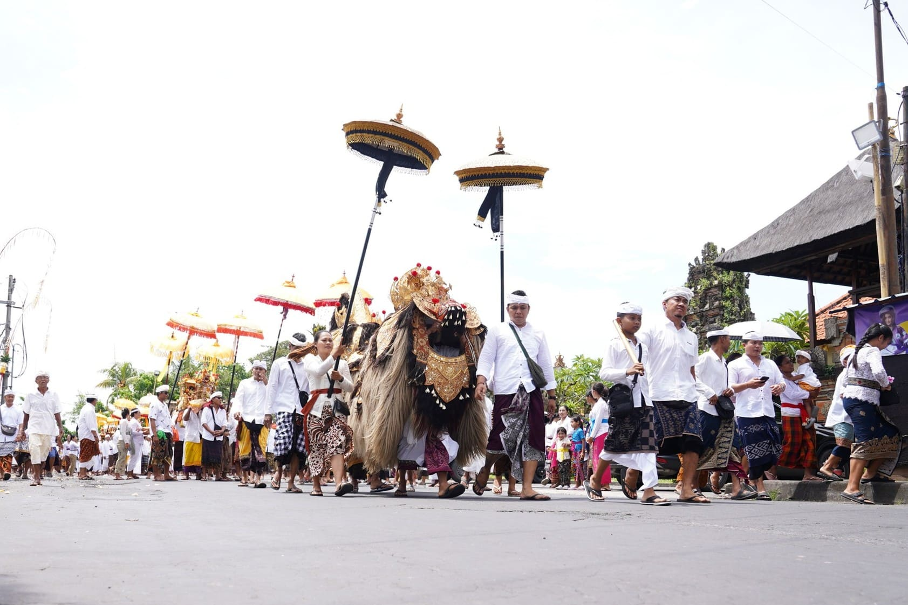
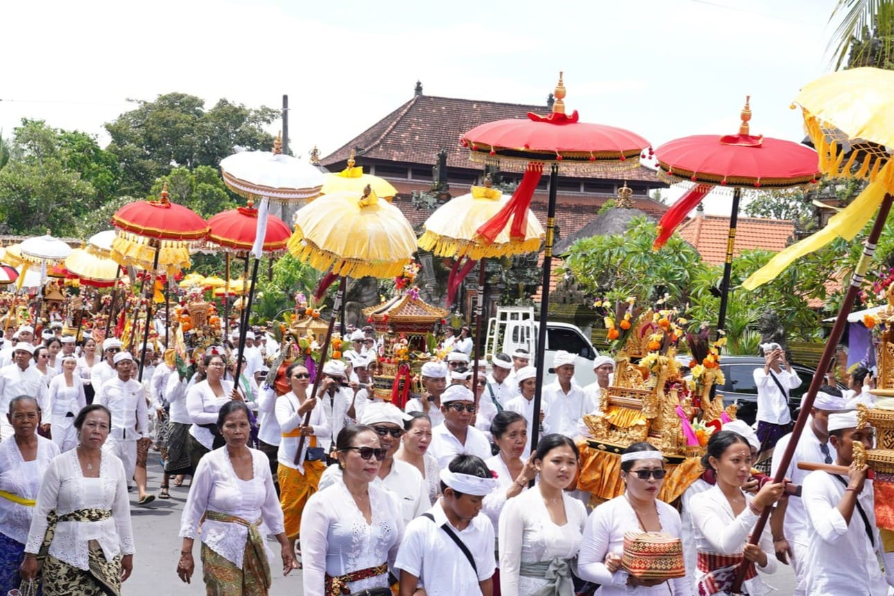
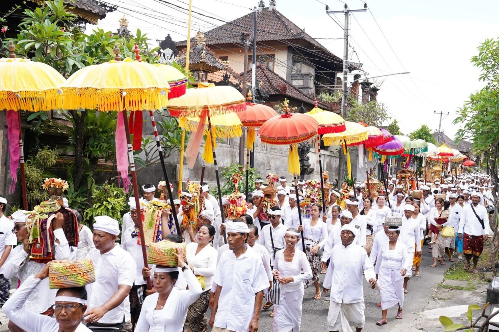
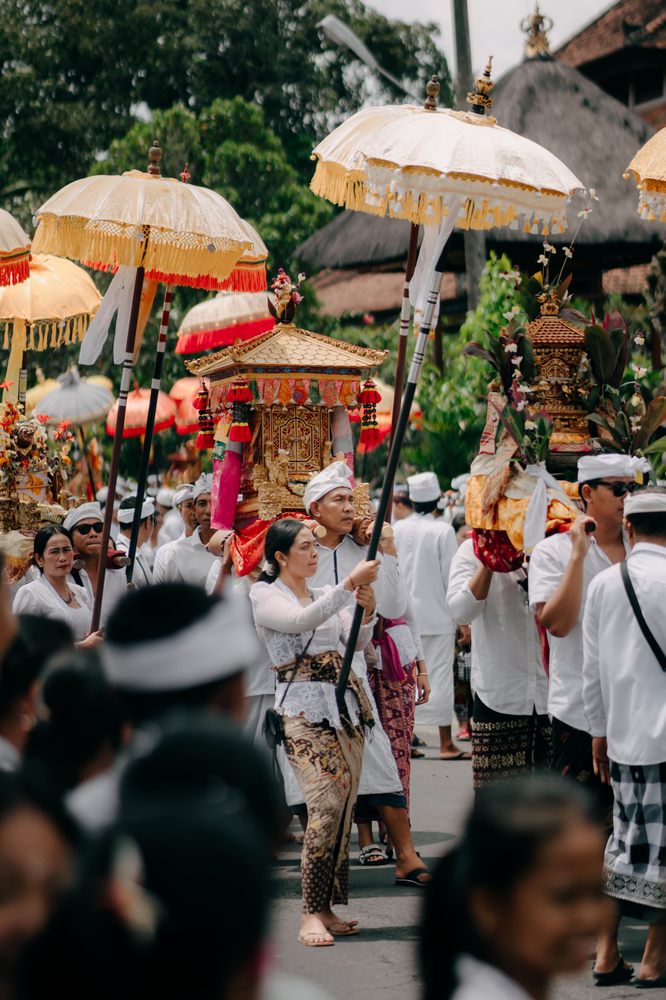
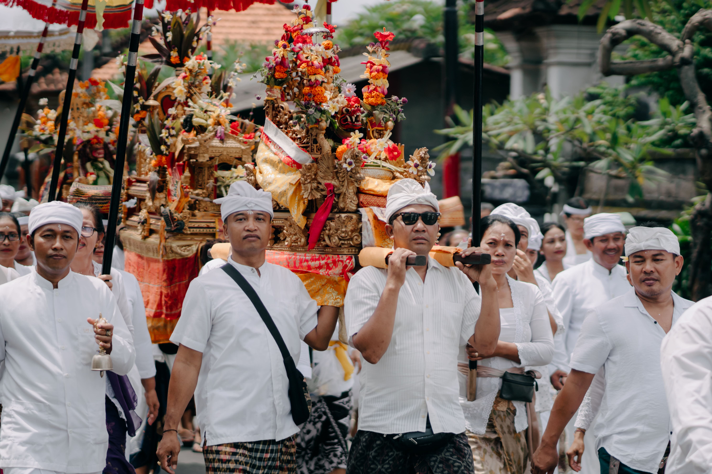
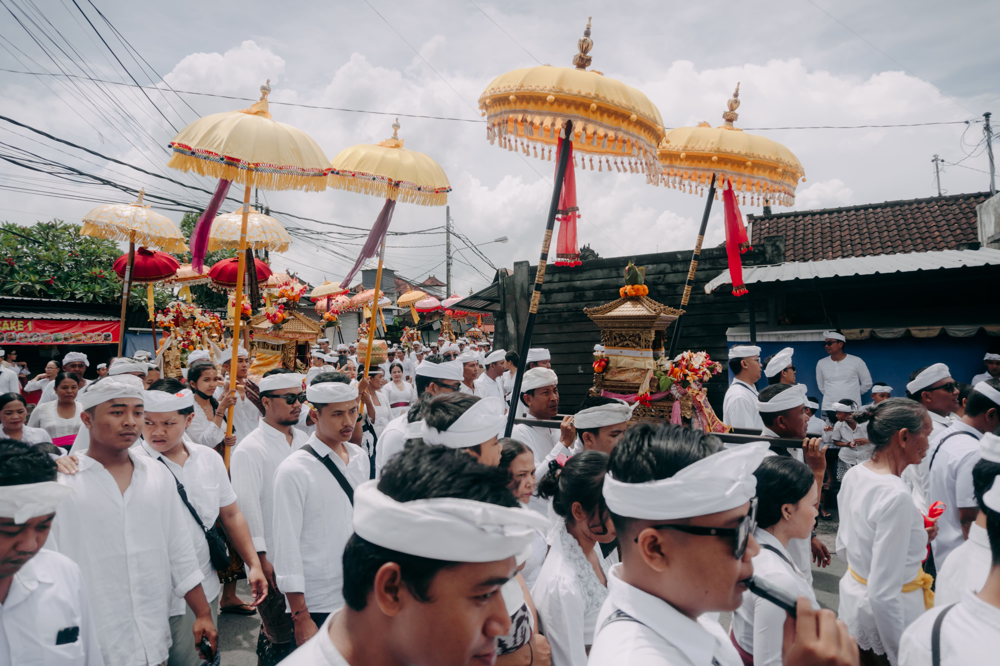
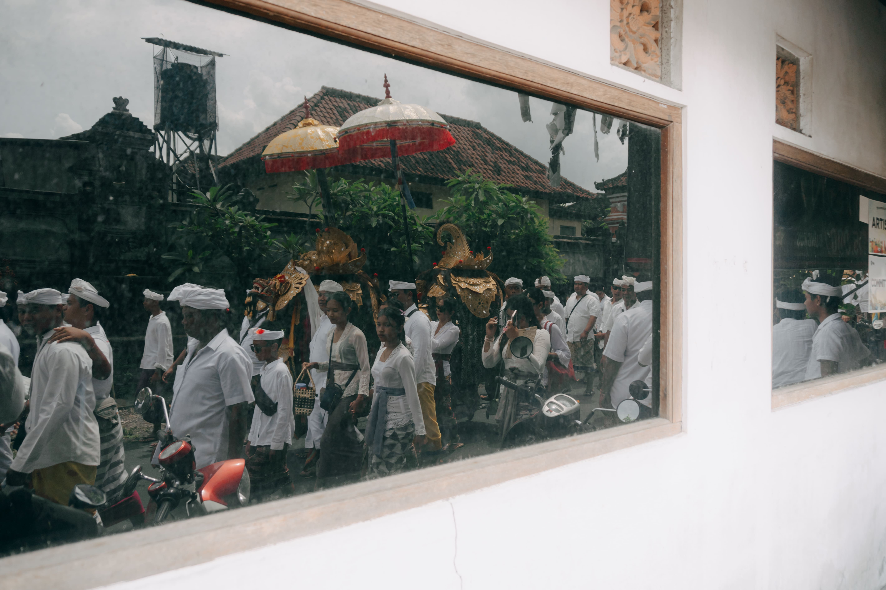
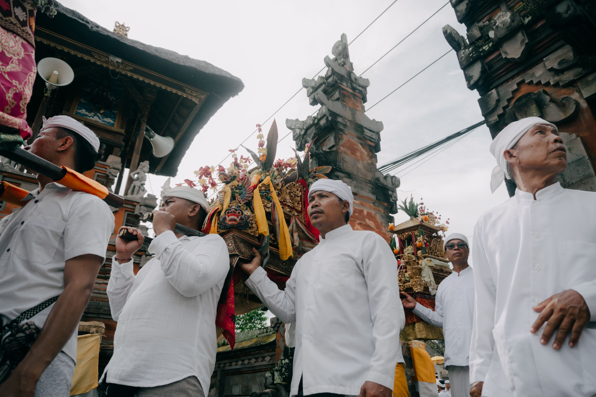
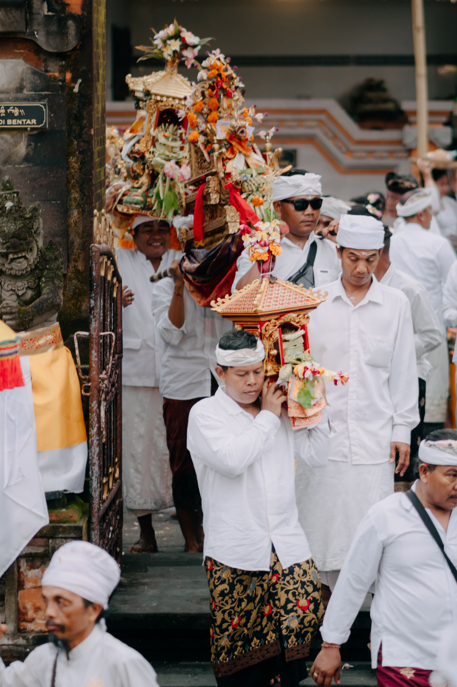
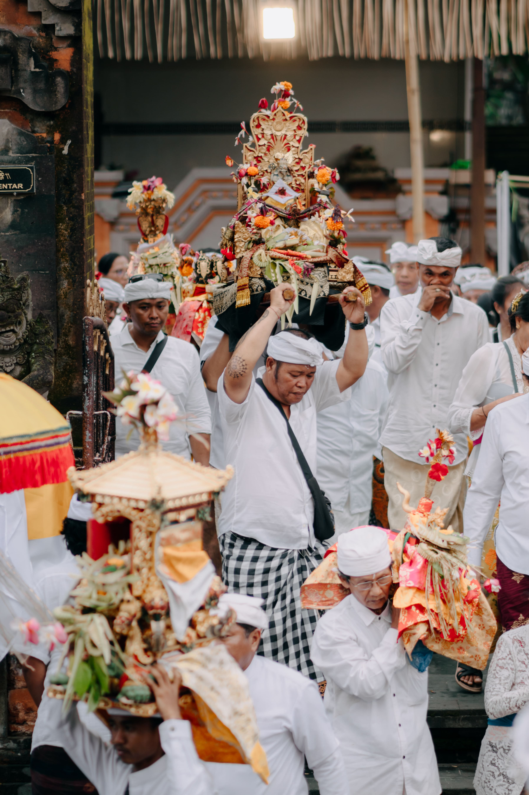
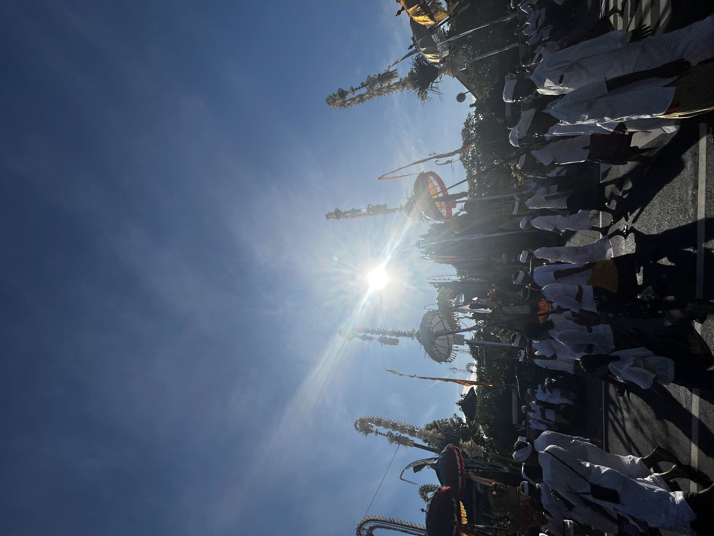
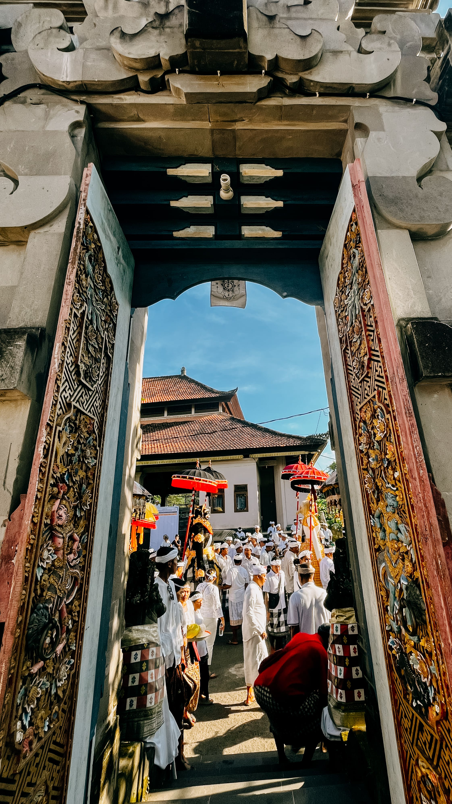
Galeri Dokumentasi Upacara
Om Shanti Shanti Shanti Om
I Komang Abhi Cakra Dharma · 202408013 · Fotografi